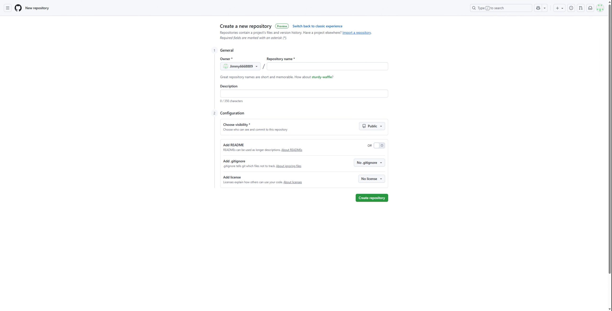
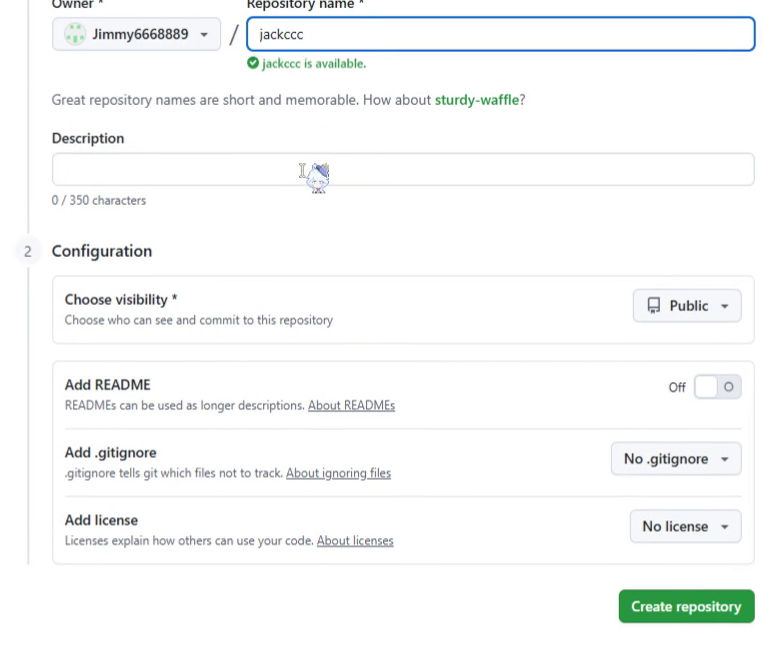
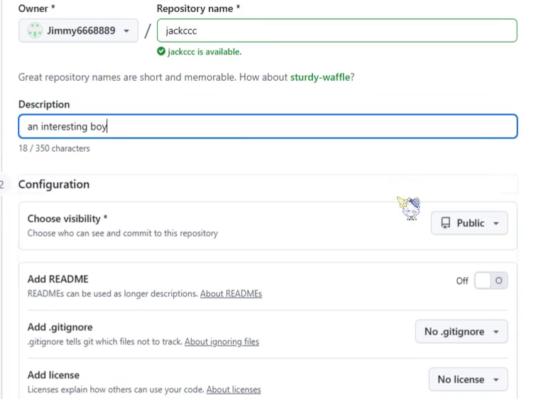
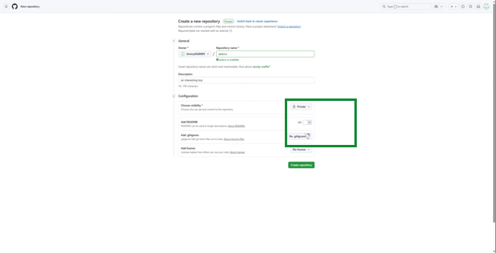
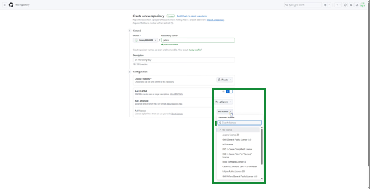
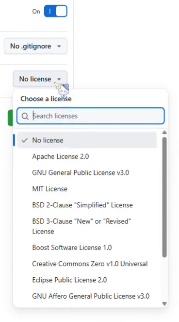
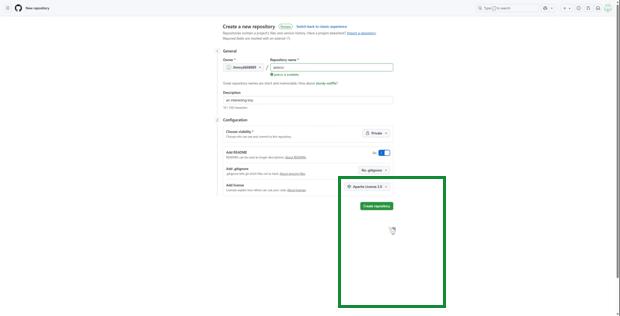
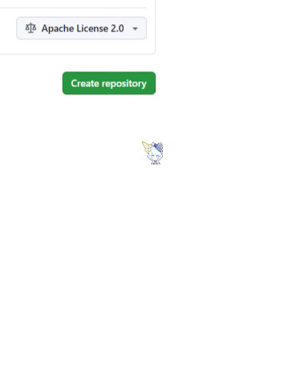
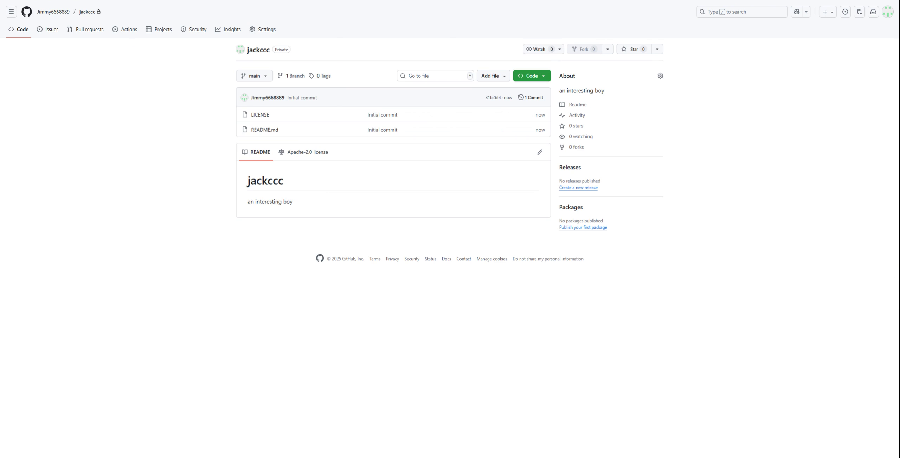

screenshot_0 · full
[2560, 1304] → [2560, 1304] · 保留像素 100.0% · 场景 0


坐标：[0, 0, 2560, 1304] · 原因：first_screenshot
算法版本：experimental_theme_aware_per_step_v2。仅用于预览，生成流程未修改。
返回任务总览 · 查看全部步骤拼图 · 查看算法判断 JSON
左侧为原图预览和选区（绿色：裁剪；蓝色：保留整图），右侧为此算法的输出预览；实验版尚未用于生成。点击图片查看原尺寸；预览自动缩放。像素减少比例不等于 token 减少比例。
[2560, 1304] → [2560, 1304] · 保留像素 100.0% · 场景 0
坐标：[0, 0, 2560, 1304] · 原因：first_screenshot
[2560, 1304] → [2560, 1304] · 保留像素 100.0% · 场景 0
坐标：[0, 0, 2560, 1304] · 原因：no_reliable_change_keep_full
[2560, 1304] → [2560, 1304] · 保留像素 100.0% · 场景 0
算法输出预览

坐标：[0, 0, 2560, 1304] · 原因：changes_spread_keep_full
[2560, 1304] → [684, 154] · 保留像素 3.2% · 场景 0
坐标：[966, 235, 1650, 389] · 原因：localized_change
[2560, 1304] → [780, 649] · 保留像素 15.2% · 场景 0
算法输出预览

坐标：[869, 244, 1649, 893] · 原因：localized_change
[2560, 1304] → [755, 563] · 保留像素 12.7% · 场景 0
算法输出预览

坐标：[895, 235, 1650, 798] · 原因：localized_change
[2560, 1304] → [943, 429] · 保留像素 12.1% · 场景 0
坐标：[895, 370, 1838, 799] · 原因：localized_change
[2560, 1304] → [365, 248] · 保留像素 2.7% · 场景 0
原图与选区

坐标：[1473, 510, 1838, 758] · 原因：localized_change
[2560, 1304] → [140, 148] · 保留像素 0.6% · 场景 0
坐标：[1513, 593, 1653, 741] · 原因：localized_change
[2560, 1304] → [369, 662] · 保留像素 7.3% · 场景 0
原图与选区

算法输出预览

坐标：[1472, 608, 1841, 1270] · 原因：localized_change
[2560, 1304] → [444, 541] · 保留像素 7.2% · 场景 0
原图与选区

算法输出预览

坐标：[1397, 729, 1841, 1270] · 原因：localized_change
[2560, 1304] → [2560, 1304] · 保留像素 100.0% · 场景 0
算法输出预览

坐标：[0, 0, 2560, 1304] · 原因：changes_spread_keep_full